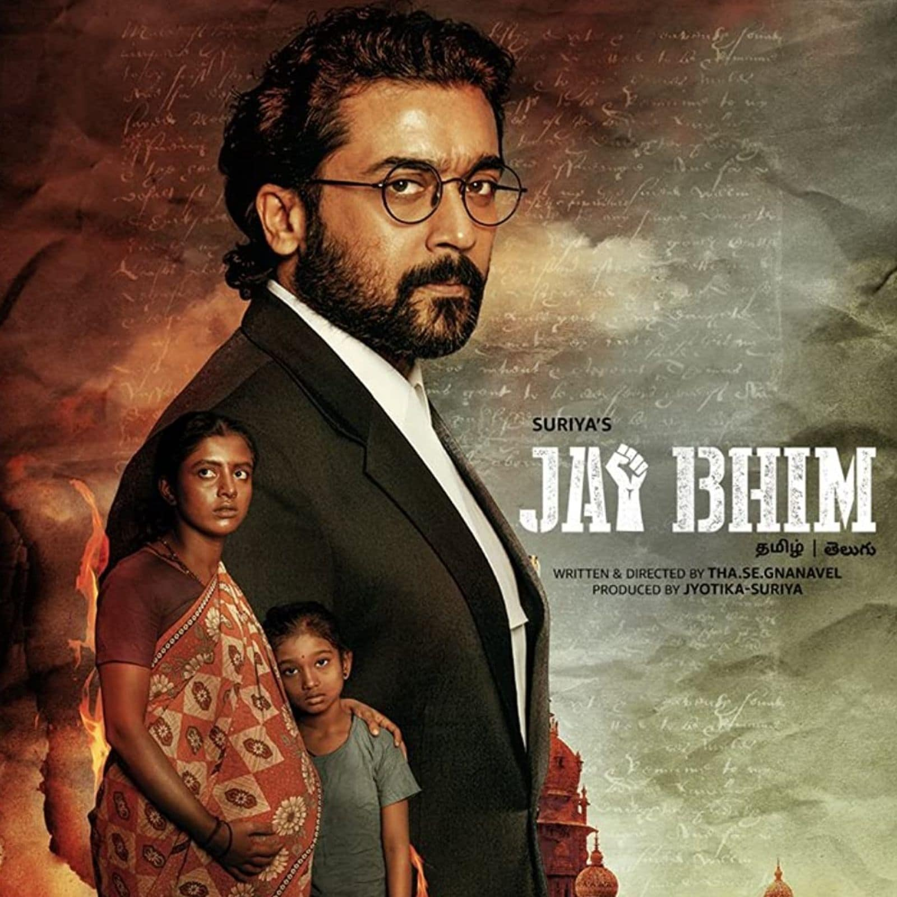
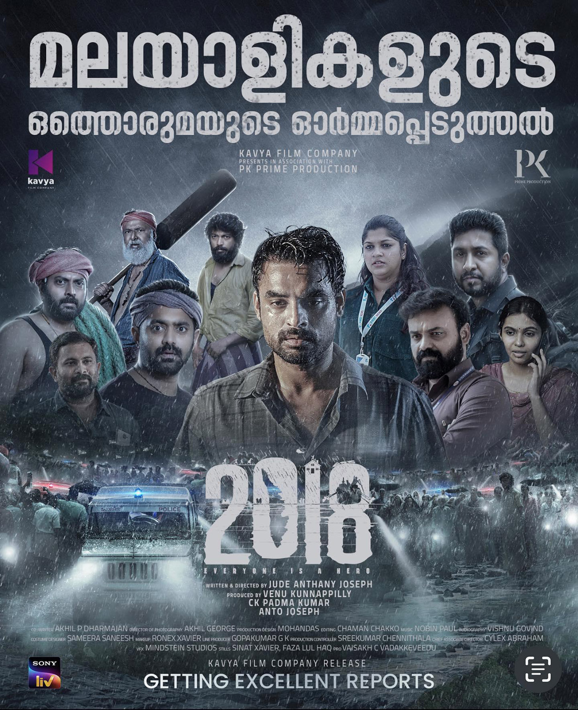

1971లో, తూర్పు పాకిస్తాన్ విముక్తి యుద్ధంపై భారతదేశం మరియు పాకిస్తాన్
మధ్య పెరుగుతున్న ఉద్రిక్తతల మధ్య, పాకిస్తాన్ నావికాదళం, అత్యంత రహస్య
మిషన్లో, బంగాళాఖాతంలోని జలాలపై నియంత్రణ సాధించడానికి భారత
గంభీరమైన-తరగతి విమాన వాహక నౌక INS విక్రాంత్పై దాడికి ప్రణాళిక వేసింది.
. వారు తమ అత్యుత్తమ-తరగతి జలాంతర్గామి PNS ఘాజీని పంపుతారు, కానీ భారతీయ
జలాంతర్గామి INS కరంజ్ (S21) ద్వారా అడ్డగించబడ్డారు. నీటి అడుగున దాడి
జరుగుతుంది.
October / अक्टूबर (2018)
डैन (वरुण धवन) किसी भी लापरवाह 21 वर्षीय युवा का जीवन जी रहा है, जो
दोस्तों और साथी होटल प्रशिक्षुओं के एक समूह के इर्द-गिर्द घूमता है, जो
एक-दूसरे के रोजमर्रा के क्षणों, उनके उतार-चढ़ाव को देखते हैं। शिउली
(बनिता संधू) उसी होटल में एक ऐसी इंटर्न है, जिसे कई बार डैन के दुस्साहस
का शिकार होना पड़ता है। जीवन तब तक चलता रहता है जब तक कि घटनाओं का अचानक
मोड़ डैन और शिउली के जीवन को एक ऐसे बंधन में नहीं तोड़ देता, जो किसी भी
21 साल के बच्चों के विपरीत होता है। उनके बीच का भावनात्मक संबंध एक
कायापलट से गुजरता है जो प्यार के एक ऐसे रूप को सामने लाता है जो किसी
अन्य से अलग होता है और अंततः एक आंतरिक जागृति की ओर ले जाता है। अक्टूबर
कोई लव स्टोरी नहीं है, बल्कि प्यार की कहानी है।

Jai Bhim / ஜெய் பீம் (2021)
ராஜகண்ணுவும் அவரது மனைவி செங்கேணியும் தாழ்த்தப்பட்ட வகுப்பைச்
சேர்ந்தவர்கள், எலிகளிடமிருந்து அதைக் காக்க வயலில் கூலி வேலை
செய்கிறார்கள், அவர்கள் வறுமையில் வாழ்கிறார்கள், ஆனால் தங்களுக்கு
இருப்பதைக் கொண்டு மகிழ்ச்சியாக இருக்கிறார்கள். ராஜகண்ணுவும் செங்கேனியும்
இரண்டாவது குழந்தையைப் பெறத் திட்டமிடுகிறார்கள், விரைவில் செங்கேனி ஒரு
நற்செய்தியைத் தெரிவிக்கிறார், ராஜ்கண்ணு ஒரு உயர் ஜாதிக்காரரின்
வீட்டிற்குள் பாம்பு புகுந்துவிட்டதால் அவரை அழைத்தார். மறுநாள் அதே
வீட்டில் சந்தேகத்திற்கிடமான முறையில் நகைகள் திருடப்பட்டதாகக்
கூறப்படுகிறது. ராஜ்கண்ணு .காவல்துறையினர் ராஜ்கண்ணுவைக் கைது செய்ய
வேண்டியதாயிற்று ஆனால் அவர் வேலைக்காக ஊரை விட்டு வெளியேறினார். அதைத்
தொடர்ந்து ஒரு கர்ப்பிணி செங்கனியையும் மற்ற குடும்ப உறுப்பினர்களையும்
காவலர்கள் ராஜ்கண்ணுவைப் பற்றிய விவரங்களைக் கேட்கிறார்கள் அவர்கள் செய்யாத
குற்றத்தை பின்னர் ஒப்புக்கொள்கிறார், ராஜ்கண்ணுவும் அவனது சகோதரனும்
சித்திரவதையிலிருந்து தப்பிக்க சிறையிலிருந்து தப்பிச் சென்றதை செங்கேனி
கண்டுபிடித்தார். பழங்குடியின கிராமங்களுக்குப் பாடம் சொல்லிக் கொடுக்கும்
மித்ரா, பழங்குடியின மக்களுக்காகப் போராடும் வழக்கறிஞர் சந்துருவைப்
பார்க்கிறார். நீதிமன்றத்தில்.
Kantara / ಕಾಂತಾರ (2022)
ವರಾಹ ಅವತಾರ ಎಂದು ಕರೆಯಲ್ಪಡುವ ಸರ್ವೋಚ್ಚ ದೇವರು ವಿಷ್ಣುವಿನ ಭೂಮಿಯ ಮೇಲಿನ ಮೂರನೇ
ಅವತಾರವನ್ನು ಚಿತ್ರಿಸುತ್ತದೆ. ಅರಣ್ಯ ಬುಡಕಟ್ಟು ಸಮುದಾಯವು ವರಾಹಕ್ಕೆ ಅರ್ಪಿಸುತ್ತದೆ
ಮತ್ತು ಸಮುದಾಯದ ದ್ವಾರಪಾಲಕ ಮತ್ತು ದುಷ್ಟಶಕ್ತಿಗಳಿಂದ (ಜೀವಂತ/ಸತ್ತ) ಭಗವಂತನ
ಪ್ರತಿಯೊಬ್ಬ ಭಕ್ತನನ್ನು ರಕ್ಷಿಸುವ ರುದ್ರ (ಭಗವಾನ್ ಶಿವ) ಭೂತ ಕೋಲ (ಕರಾವಳಿ
ಕರ್ನಾಟಕದ ದೈವಿಕ ನೃತ್ಯ) ಕಲಾವಿದ ಎಂದು ಪರಿಗಣಿಸುತ್ತದೆ. ಪುರಾತನ ರಾಜನು ತನ್ನ
ಶಾಂತಿಗಾಗಿ ಚೌಕಾಸಿಗಾಗಿ ದೇವಮಾನವರೊಂದಿಗೆ ಒಪ್ಪಂದ ಮಾಡಿಕೊಂಡಿದ್ದ ಭೌತಿಕ ಲಾಭಗಳ
ಕಾಮದಿಂದ ಪೂರ್ವಜರ ಭರವಸೆಯನ್ನು ಜನರು ಉಲ್ಲಂಘಿಸುವ ಬೆದರಿಕೆಗೆ ಒಳಗಾಗಿದ್ದಾರೆ. ಅಂತಹ
ಶಕ್ತಿಯುತವಾದ ಕಥಾಹಂದರದೊಂದಿಗೆ, ಪ್ರತಿಯೊಬ್ಬ ನಟನ ಅತ್ಯುತ್ತಮ ಅಭಿನಯವು ಕಚ್ಚಾ
ಹಿನ್ನೆಲೆಯನ್ನು ಇಟ್ಟುಕೊಂಡು ಕರಾವಳಿ ಕರ್ನಾಟಕದ ಸುಂದರವಾದ ಸಾಂಪ್ರದಾಯಿಕ
ಆಚರಣೆಗಳನ್ನು ಒಳ್ಳೆಯದು ಮತ್ತು ಕೆಟ್ಟದ್ದರ ಅಂತಿಮ ಹಣಾಹಣಿಯಲ್ಲಿ ತೋರಿಸುತ್ತದೆ.

2018 (2023)
2018-ലെ വെള്ളപ്പൊക്കത്തിൽ ജനജീവിതം സ്തംഭിച്ച കേരളത്തിലാണ് കഥ
നടക്കുന്നത്. പോണ്ടിച്ചേരിയിലെ വെള്ളത്തിൻ്റെ ദൗർലഭ്യത്തെക്കുറിച്ച് ഒരു
ടിവി റിപ്പോർട്ടർ നൂറ റിപ്പോർട്ട് ചെയ്യുന്നു, ഗ്രാമവാസികളിൽ ഒരാൾ സേതുപതി
ഇടയിൽ പാർക്ക് ചെയ്യുന്നതിനായി മനഃപൂർവം അവളുടെ കാറിൽ ഇടിച്ചപ്പോൾ. അനുവും
ഈയിടെ കടയുടെ എതിർവശത്തുള്ള സ്കൂളിൽ ചേർന്ന മഞ്ജുവുമായി
പ്രണയത്തിലായിരുന്ന അന്ധനായ ഒരു കടയുടമയെ ഇപ്പോൾ മുൻ സൈനിക ഉദ്യോഗസ്ഥൻ
സഹായിക്കുന്നു. മാത്തച്ചൻ്റെ ഒരു മത്സ്യത്തൊഴിലാളി കുടുംബം അവനും മകൻ
വിൻസ്റ്റണും കടലിലെ കൊടുങ്കാറ്റിനെ അതിജീവിച്ച് കരയിലെത്തുന്നു, ജോലി
ചെയ്യുന്ന രമേശൻ അബുദാബിയിൽ ഭാര്യയുമായി നല്ല ബന്ധത്തിലല്ലെങ്കിലും
അവളോടൊപ്പം തിരിച്ചെത്തുന്നു. ജോലിക്കും അമ്മയുടെ അസുഖത്തിനും ഇടയിൽ
നൂറയ്ക്ക് അവളുടെ ജീവിതം സന്തുലിതമാക്കേണ്ടതുണ്ട്, സേതുപതി ഒരു ഷോർട്ട്
കോപിയാണ്, ഒരു ഫാക്ടറി പൊട്ടിത്തെറിക്കാൻ ജോലി നൽകി, അനൂപ് ഉടൻ വരുന്നു
മഞ്ജുവിനെ വിവാഹം കഴിക്കാൻ പോകുന്നു, മാത്തച്ചൻ്റെ മകൻ നിക്സൺ തൻ്റെ
കുടുംബ മത്സ്യബന്ധനത്തിൽ നിന്ന് മാറി മോഡലിംഗ് ചെയ്യുന്നു, ഒരു
വ്യവസായിയുടെ മകൾ ചാണ്ടിയെയും പോളണ്ട് ദമ്പതികൾക്ക് നഗരം കാണിക്കാൻ ടാക്സി
ഡ്രൈവറായ കോശിയെയും ജോലി നൽകി പ്രണയിച്ചു. നഗരത്തിൽ നിർത്താതെ പെയ്യുന്ന മഴ
വെള്ളപ്പൊക്കത്തിലേക്ക് നയിക്കുകയും ഒറ്റപ്പെട്ട ആളുകളെ സഹായിക്കുന്നതിൽ
വ്യക്തികൾ നായകന്മാരായി മാറുകയും ചെയ്യുമ്പോൾ കൂട്ടിയിടിക്കുക.
Oppenheimer (2023)
Oppenheimer is a 2023 epic biographical thriller drama film[a] written,
directed, and produced by Christopher Nolan.[8] It follows the life of
J. Robert Oppenheimer, the American theoretical physicist who helped
develop the first nuclear weapons during World War II. Based on the 2005
biography American Prometheus by Kai Bird and Martin J. Sherwin, the
film chronicles Oppenheimer's studies, his direction of the Los Alamos
Laboratory and his 1954 security hearing. Cillian Murphy stars as
Oppenheimer, alongside Robert Downey Jr. as the United States Atomic
Energy Commission member Lewis Strauss. The ensemble supporting cast
includes Emily Blunt, Matt Damon, Florence Pugh, Josh Hartnett, Casey
Affleck, Rami Malek, and Kenneth Branagh.
Sairat /सैराट (2016)
सैराट ही एक प्रेमकथा आहे, जशी जाहिरात केली आहे. आर्ची, एक श्रीमंत
उच्चवर्गीय मुलगी, तिचा वर्गमित्र परश्या, खालच्या सामाजिक स्तरातील गरीब
पण हुशार मुलगा. जादू घडते आणि ते एकमेकांना पाहू लागतात. सुरुवातीला
गुपचूप, पण वेळ निघून गेल्याने ते अधिक धाडसी होत जातात. समस्या अशी आहे की
आर्ची केवळ उच्च वर्गातील नाही, तिचे वडील एक शक्तिशाली राजकारणी आहेत आणि
तिचा भाऊ प्रिन्स त्याच्या पावलावर पाऊल ठेवत आहे. संपूर्ण प्रकरण हे
संकटासाठी एक कृती आहे आणि अपेक्षेप्रमाणे, संकट येते. परश्याचे मित्र,
बाल्या आणि सल्या यांच्या मदतीने ते त्यासाठी धाव घेण्याचे ठरवतात, परंतु
नशिबाला इतर योजना असतात.
Last Film Show / છેલ્લો ફિલ્મ શો (2021)
ગુજરાત, ભારતના સૌરાષ્ટ્રના ચલાલા ગામનો નવ વર્ષનો સમય (ભાવિન રબારી)
પ્રોજેક્શનિસ્ટ - ફઝલ (ભાવેશ શ્રીમાળી)ને લાંચ આપીને, રન્ડડાઉન મૂવી
પ્લેસના પ્રોજેક્શન બૂથમાંથી, ફિલ્મો જોવામાં આખો ઉનાળો વિતાવે છે. તે
ફિલ્મો અને ફિલ્મ નિર્માણથી સંપૂર્ણપણે મંત્રમુગ્ધ છે, તે બિંદુ સુધી કે તે
એક ફિલ્મ નિર્માતા બનવાનું નક્કી કરે છે, જે તેની રાહ જોઈ રહેલા હૃદયદ્રાવક
સમયથી અજાણ છે.